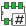

Reference manual
Copyright
This document is Copyright © 2010-2015 by it’s contributors as listed below. You may distribute it and/or modify it under the terms of either the GNU General Public License (http://www.gnu.org/licenses/gpl.html), version 3 or later, or the Creative Commons Attribution License (http://creativecommons.org/licenses/by/3.0/), version 3.0 or later.
All trademarks within this guide belong to their legitimate owners.
Contributors
Jean-Pierre Charras, Fabrizio Tappero, Wayne Stambaugh.
Feedback
Please direct any bug reports, suggestions or new versions to here:
-
About KiCad document: https://github.com/KiCad/kicad-doc/issues
-
About KiCad software: https://bugs.launchpad.net/kicad
-
About KiCad software i18n: https://github.com/KiCad/kicad-i18n/issues
Publication date and software version
Published on may 22, 2015.
1. Introduction to CvPcb
CvPcb is a tool that allows you to associate components in your schematic to component footprints used when laying out the printed circuit board. This association is added to the net list file created by the schematic capture program Eeschema.
The net list file generated by Eeschema specifies which printed circuit board footprint is associated with each component in the schematic only when the footprint field of the component is initialized.
This is the case when component footprints are associated during schematic capture by setting the component’s footprint field, or it is set in the schematic library when loading the symbol.
CvPcb provides a convenient method of associating footprints to components during schematic capture. It provides footprint list filtering, footprint viewing, and 3D component model viewing to help ensure the correct footprint is associated with each component.
Components can be assigned to their corresponding footprints manually or automatically by creating equivalence files (.equ files). Equivalence files are lookup tables associating each component with it’s footprint.
This interactive approach is simpler and less error prone than directly associating the footprints in the schematic editor.
CvPcb allows you to see the list of available footprints and to display them on the screen to ensure you are associating the correct footprint.
It can be run only from Eeschema, from the top toolbar, either when Eeschema is started from the KiCad project manager or when Eeschema is started as a stand alone application.
Running CvPcb from Eeschema lauched from the KiCad Manager is generally better because:
-
Cvpcb needs the project config file to know the footprint libraries to load.
-
Cvpcb initializes the components footprint fields of the current schematic project. This is possible only if the project file is in the same path as the open schematic.
Lauching CvPcb from an Eeschema launched from the KiCad manager assures automatically all this.
|
Warning
|
You actually can launch CvPcb from a stand alone Eeschema session though, but please note that any schematic opened that does not have a project file in the same path may be missing components due to missing libraries which will not show up in CvPcb. If there is no fp-lib-table file in the same path as the open schematic, no project specific footprint libraries will be available either. |
2. CvPcb Features
2.1. Manual or Automatic Association
CvPcb allows for interactive assignment (manual) as well as automatic assignment via equivalence files.
3. Invoking CvPcb
CvPcb is only invoked from the schematic capture program Eeschema, by the tool:
Eeschema automatically passes the correct data (component list and footprints) to CvPcb. There is no update to do (unless some new components are not yet annotated), just run Cvpcb.
4. CvPcb Commands
4.1. Main Screen
The image below shows the main window of CvPcb.
The left pane contains the list of available footprint library file names associated with the project. The center pane contains the list of components loaded from the net list file. The right pane contains the list of available footprints loaded from the project footprint libraries. The component pane will be empty if no netlist file has been loaded and the footprint pane can be also empty if no footprint libraries are found.
4.2. Main Window Toolbar
The top toolbar allows for easy access to the following commands:
|
Transfer the current footprint association to Eeschema (this is the content of footprint fields). |
|
Invoke the CvPcb configuration menu. |
|
Display the footprint of the component selected in the footprint window. |
|
Automatically select the previous component in the list without a footprint association. |
|
Automatically select the next component in the list without a footprint association. |
|
Automatically associate footprints with components starting using an equivalence file. |
|
Delete all footprint assignments. |
|
Open the selected footprint documentation pdf file using the default pdf viewer. |
|
Enable or disable the filtering to limit the list of footprints to the footprint filters of the selected component. |
 |
Enable or disable the filtering to limit the list of footprints using the pin count of the selected component. |
|
Enable or disable filtering to limit the list of footprints using the selected library. |
4.3. Main Window Keyboard Commands
The following table lists the keyboard commands for the main window:
Right Arrow / Tab |
Activate the next pane to the right of the currently activated pane. Wrap around to the first pane if the last pane is currently activated. |
Left Arrow |
Activate the next pane to the left of the currently activated pane. Wrap around to the last pane if the first pane is currently activated. |
Up Arrow |
Select the previous item of the currently selected list. |
Down Arrow |
Select the next item of the currently selected list. |
Page Up |
Select the item up one full page of the currently selected list. |
Page Down |
Select the item down one full page of the currently selected list. |
Home |
Select the first item of the currently selected list. |
End |
Select the last item of the currently selected list. |
4.4. CvPcb Configuration
CvPcb can be automatically closed after saving the footprint association file, or not.
Invoking the “Libraries” entry in the “Preferences” menu displays the library configuration dialog.
Depending on the CvPcb version, there are 2 different methods of library management:
-
The legacy management, using *.mod files, and a library list of files.
-
The new “Pretty” format, using one file by footprint. It uses a folder list. Each folder (*.pretty folder name) is a library. When using this new method of library management, You can also use native libraries originating from GEDA/GPCB or even Eagle xml format files.
5. Footprint Libraries Management
5.1. Important remark:
This section is relevant only for KiCad versions since December 2013
5.2. Footprint Library tables
Since December 2013, Pcbnew and CvPcb uses a new library management tool based on footprint library tables which allows direct use of footprint libraries from
-
KiCad Legacy footprint libraries (.mod files)
-
KiCad New .pretty footprint libraries (on your local disk) (folders with .pretty extension, containing .kicad_mod files)
-
KiCad New .pretty footprint libraries (on our Github server, or other Github server)
-
GEDA libraries (folders containing .fp files)
-
Eagle footprint libraries
|
Note
|
|
The image below shows the footprint library table editing dialog which can be opened by invoking the “Footprint Libraries” entry from the “Preferences” menu.
The footprint library table is used to map a footprint library of any supported library type to a library nickname. This nickname is used to look up footprints instead of the previous method which depended on library search path ordering.
This allows CvPcb to access footprints with the same name in different libraries by ensuring that the correct footprint is loaded from the appropriate library. It also allows CvPcb to support loading libraries from different PCB editors such as Eagle and GEDA.
5.2.1. Global Footprint Library Table
The global footprint library table contains the list of libraries that are always available regardless of the currently loaded project file. The table is saved in the file fp-lib-table in the user’s home folder. The location of this folder is dependent upon the operating system being used.
5.2.2. Project Specific Footprint Library Table
The project specific footprint library table contains the list of libraries that are available specifically for the currently loaded project file. The project specific footprint library table can only be edited when it is loaded along with the project netlist file. If no project file is loaded or there is no footprint library table file in the project path, an empty table is created which can be edited and later saved along with the footprint assignment file.
5.2.3. Initial Configuration
The first time Pcbnew or CvPcb is run and the global footprint table file fp-lib-table is not found in the user’s home folder, Pcbnew or CvPcb will attempt to copy the default footprint table file fp-lib-table stored in the system’s KiCad template folder to the file fp-lib-table in the user’s home folder.
If fp-lib-table cannot be found, an empty footprint library table will be created in the user’s home folder. If this happens, the user can either copy fp-lib-table manually or configure the table by hand.
The default footprint library table includes many of the standard footprint libraries that are installed as part of KiCad.
Obviously, the first thing to do is to modify this table (add/remove entries) according to your work and the libraries you need for all your projects.
(Too many libraries to load is time consuming)
5.2.4. Adding Table Entries
In order to use a footprint library, it must first be added to either the global table or the project specific table. The project specific table is only applicable when you have a net list file open.
Each library entry must have a unique nickname.
This does not have to be related in any way to the actual library file name or path. The colon : character cannot be used anywhere in the nickname. Each library entry must have a valid path and/or file name depending on the type of library. Paths can be defined as absolute, relative, or by environment variable substitution (see section below).
The appropriate plug in type must be selected in order for the library to be properly read. KiCad currently supports reading KiCad legacy, KiCad Pretty, Eagle, and GEDA footprint libraries.
There is also a description field to add a description of the library entry. The option field is not used at this time so adding options will have no effect when loading libraries.
-
Please note that you cannot have duplicate library nicknames in the same table. However, you can have duplicate library nicknames in both the global and project specific footprint library table.
-
The project specific table entry will take precedence over the global table entry when duplicated names occur. When entries are defined in the project specific table, an fp-lib-table file containing the entries will be written into the folder of the currently open net list.
5.2.5. Environment Variable Substitution
One of the most powerful features of the footprint library table is environment variable substitution. This allows you to define custom paths to where your libraries are stored in environment variables. Environment variable substitution is supported by using the syntax ${ENV_VAR_NAME} in the footprint library path.
By default, at run time KiCad defines two environment variables:
-
the KIPRJMOD environment variable. This points always the current project directory and cannot be modified.
-
the KISYSMOD environment variable. This points to where the default footprint libraries that were installed with KiCad are located.
You can override KISYSMOD by defining it yourself in preferences/Configure Path which allows you to substitute your own libraries in place of the default KiCad footprint libraries.
When a project netlist file is loaded, CvPcb defines the KIPRJMOD using the file path (the project path).
Pcbnew also defines this environment variable when loading a board file.
This allows you to store libraries in the project path without having to define the absolute path (which is not always known) to the library in the project specific footprint library table.
5.2.6. Using the GitHub Plugin
The GitHub is a special plugin that provides an interface for read only access to a remote Git Hub repository consisting of pretty (Pretty is name of the KiCad footprint file format) footprints and optionally provides “Copy On Write” (COW) support for editing footprints read from the GitHub repo and saving them locally. Therefore the “Git Hub” plugin is for read only accessing remote pretty footprint libraries at https://github.com. To add a GitHub entry to the footprint library table the “Library Path” in the footprint library table row a must be set to a valid GitHub URL.
For example:
or
Typically GitHub URLs take the form:
The “Plugin Type” must be set to “Github”. To enable the “Copy On Write” feature the option allow_pretty_writing_to_this_dir must be added to the “Options” setting of the footprint library table entry. This option is the “Library Path” for local storage of modified copies of footprints read from the GitHub repo. The footprints saved to this path are combined with the read only part of the Git Hub repository to create the footprint library. If this option is missing, then the Git Hub library is read only. If the option is present for a Git Hub library, then any writes to this hybrid library will go to the local *.pretty directory. Note that the github.com resident portion of this hybrid COW library is always read only, meaning you cannot delete anything or modify any footprint in the specified Git Hub repository directly. The aggregate library type remains “Github” in all further discussions, but it consists of both the local read/write portion and the remote read only portion.
The table below shows a footprint library table entry without the option allow_pretty_writing_to_this_dir:
| Nickname | Library Path | Plugin Type | Options | Descript. |
|---|---|---|---|---|
github |
Github |
Liftoff’s GH footprints |
The table below shows a footprint library table entry with the COW option given. Note the use of the environment variable ${HOME} as an example only. The github.pretty directory is located in ${HOME}/pretty/ path. Anytime you use the option allow_pretty_writing_to_this_dir, you will need to create that directory manually in advance and it must end with the extension .pretty.
| Nickname | Library Path | Plugin Type | Options | Descript. |
|---|---|---|---|---|
github |
Github |
allow_pretty_writing_to_this_dir= ${HOME}/pretty/github.pretty |
Liftoff’s GH footprints |
Footprint loads will always give precedence to the local footprints found in the path given by the option allow_pretty_writing_to_this_dir. Once you have saved a footprint to the COW library’s local directory by doing a footprint save in the footprint editor, no Git Hub updates will be seen when loading a footprint with the same name as one for which you’ve saved locally.
Always keep a separate local *.pretty directory for each Git Hub library, never combine them by referring to the same directory more than once.
Also, do not use the same COW (*.pretty) directory in a footprint library table entry. This would likely create a mess.
The value of the option allow_pretty_writing_to_this_dir will expand any environment variable using the ${} notation to create the path in the same way as the “Library Path” setting.
What is the point of COW? It is to turbo-charge the sharing of footprints.
If you periodically email your COW pretty footprint modifications to the GitHub repository maintainer, you can help update the Git Hub copy. Simply email the individual *.kicad_mod files you find in your COW directories to the maintainer of the GitHub repository. After you have received confirmation that your changes have been committed, you can safely delete your COW file(s) and the updated footprint from the read only part of Git Hub library will flow down. Your goal should be to keep the COW file set as small as possible by contributing frequently to the shared master copies at https://github.com.
5.2.7. Usage Patterns
Footprint libraries can be defined either globally or specifically to the currently loaded project. Footprint libraries defined in the user’s global table are always available and are stored in the fp-lib-table file in the user’s home folder.
Global footprint libraries can always be accessed even when there is no project net list file opened.
The project specific footprint table is active only for the currently open net list file.
The project specific footprint library table is saved in the file fp-lib-table in the path of the currently open net list . You are free to define libraries in either table.
There are advantages and disadvantages to each method. You can define all of your libraries in the global table which means they will always be available when you need them. The disadvantage of this is that you may have to search through a lot of libraries to find the footprint you are looking for. You can define all your libraries on a project specific basis.
The advantage of this is that you only need to define the libraries you actually need for the project which cuts down on searching.
The disadvantage is that you always have to remember to add each footprint library that you need for every project. You can also define footprint libraries both globally and project specifically.
One usage pattern would be to define your most commonly used libraries globally and the library only require for the project in the project specific library table. There is no restriction on how you define your libraries.
5.3. Using the Footprint Library Table Wizard
A wizard to add footprint libraries to the footprint library tables is available from the footprint library table editing dialog.
Note also libraries can be any type of footprint library supported by KiCad.
It can add “local” libraries or libraries from a Github repository.
When libraries are on a Github repository, they can be added as remote libraries, or downloaded and added as local libraries.
Here, the local libraries option is selected.
Here, the remote libraries option is selected.
Depending on the selected option, one of these pages will be displayed, to select a list of libraries:
Here, the local libraries option was selected.
Here, the remote libraries option was selected.
After a set of libraries is selected, the next page validates the choice:
If some selected libraries are incorrect (not supported, not a footprint library …) they will be flagged as “INVALID”.
The last choice is the footprint library table to populate:
-
the global table
-
the local table (the project specific table)
6. Viewing the Current Footprint
6.1. The view footprint command
The view footprint command displays the footprint currently selected in the footprint window. A 3D model of the component can be shown if it has been created and assigned to the footprint. Below is the footprint viewer window.
6.1.1. Status Bar Information
The status bar is located at the bottom of the CvPcb new main window and provides useful information to the user. The following table defines the contents of each pane in the status bar.
Left |
Component count: total, unassigned |
Middle |
Filter list of the selected component |
Right |
Filtering mode and count of available footprints |
6.1.2. Keyboard Commands
F1 |
Zoom In |
F2 |
Zoom Out |
F3 |
Refresh Display |
F4 |
Move cursor to center of display window |
Home |
Fit footprint into display window |
Space Bar |
Set relative coordinates to the current cursor position |
Right Arrow |
Move cursor right one grid position |
Left Arrow |
Move cursor left one grid position |
Up Arrow |
Move cursor up one grid position |
Down Arrow |
Move cursor down one grid position |
6.1.3. Mouse Commands
Scroll Wheel |
Zoom in and out at the current cursor position |
Ctrl + Scroll Wheel |
Pan right and left |
Shift + Scroll Wheel |
Pan up and down |
Right Button Click |
Open context menu |
6.1.4. Context Menu
Displayed by right-clicking the mouse:
Zoom Selection (Select Zoom) |
Direct selection of the display zoom. |
Grid Selection (Grid Select) |
Direct selection of the grid. |
6.1.5. Horizontal Toolbar
|
Show display options dialog |
|
Zoom in |
|
Zoom out |
|
Redraw |
|
Fit drawing in display area |
|
Open 3D model viewer |
6.1.6. Vertical Toolbar
|
Show or hide the grid |
|
Show coordinates in polar or rectangular notation |
|
Display coordinates in inches |
|
Display coordinates in millimeters |
|
Toggle pointer style |
|
Toggle between drawing pads in sketch or normal mode |
|
Toggle between drawing text in sketch or normal mode |
|
Toggle between drawing edges in sketch or normal mode |
6.2. Viewing the Current 3D Model
6.2.1. Mouse Commands
Scroll Wheel |
Zoom in and out at the current cursor position |
Ctrl + Scroll Wheel |
Pan right and left |
Shift + Scroll Wheel |
Pan up and down |
6.2.2. Horizontal Toolbar
|
Reload the 3D model |
|
Copy 3D image to clipboard |
|
Set 3D viewer options |
|
Zoom in |
|
Zoom out |
|
Redraw |
|
Fit drawing in display area |
|
Rotate backward along the X axis |
|
Rotate forward along the X axis |
|
Rotate backward along the Y axis |
|
Rotate forward along the Y axis |
|
Rotate backward along the Z axis |
|
Rotate forward along the Z axis |
|
Pan left |
|
Pan right |
|
Pan up |
|
Pan down |
|
Toggle orthographic projection mode on and off |
7. Using CvPcb to Associate Components with Footprints
7.1. Manually Associating Footprints with Components
To manually associate a footprint with a component first select a component in the component pane. Then select a footprint in the footprint pane by double-clicking the left mouse button on the name of the desired footprint. The unassigned next component in the list is automatically selected. Changing the component footprint is performed in the same manner.
7.2. Filtering the Footprint List
If the selected component and/or library is highlighted when the one or more of the filtering option is enabled, the displayed footprint list in CvPcb is filtered accordingly.
The icons

 enable and disable the
filtering feature. When the filtering is not enabled, the full footprint
list is shown.
enable and disable the
filtering feature. When the filtering is not enabled, the full footprint
list is shown.
Without filtering:
Filtered by list of footprint filters assigned to the selected component. The component filters are listed on the center pane of the status bar at the bottom of the main window.
Filtered by the footprint filter of the selected component:
In the component library editor in Eeschema, the footprint list was set using the entries in the footprint filter tab of the component properties dialog as shown below.
Filtered by the pin count of the selected component:
Filtered by the selected library.
The filtering can be combined to form more complex filtering to help reduce the number of footprints in the footprint pane.
Filtered by the selected component pin count and the component filter:
8. Automatic Associations
8.1. Equivalence files
Equivalence files allow for automatic assignment of footprints to components.
They list the name of the corresponding footprint according to the name (value field) of the component. These files typically have the .equ file extension.
They are plain text files and may be edited by using any plain text editor, and must be created by the user.
8.2. Equivalence File Format
Equivalence files consist of one line for each component. Each line has the following structure:
‘component value’ ‘footprint name’
Each name must be single quoted by the ' character and the component and footprint names must be separated by one or more spaces.
Example:
If the U3 component is circuit 14011 and its footprint is 14DIP300, the line is:
‘14011’ ‘14DIP300’
Any line starting with # is a comment.
Here is an example equivalence file:
#integrated circuits (smd): '74LV14' 'SO14E' '74HCT541M' 'SO20L' 'EL7242C' 'SO8E' 'DS1302N' 'SO8E' 'XRC3064' 'VQFP44' 'LM324N' 'S014E' 'LT3430' 'SSOP17' 'LM358' 'SO8E' 'LTC1878' 'MSOP8' '24LC512I/SM' 'SO8E' 'LM2903M' 'SO8E' 'LT1129_SO8' 'SO8E' 'LT1129CS8-3.3' 'SO8E' 'LT1129CS8' 'SO8E' 'LM358M' 'SO8E' 'TL7702BID' 'SO8E' 'TL7702BCD' 'SO8E' 'U2270B' 'SO16E' #Xilinx 'XC3S400PQ208' 'PQFP208' 'XCR3128-VQ100' 'VQFP100' 'XCF08P' 'BGA48' #upro 'MCF5213-LQFP100' 'VQFP100' #regulators 'LP2985LV' 'SOT23-5'
8.3. Automatically Associating Footprints to Components
Click on the automatic footprint association button on the top toolbar to process an equivalence file.
All components found by their value in the selected equivalence (*.equ) file will have their footprint automatically assigned.